Image deblurring with Markov Random Fields
- 1 Presentation of the project
- 2 Numerical implementation of Markov fields
- 3 Practical results and discussion
- 4 Conclusion
Presentation of the project
The acquisition of a digital image is most often accompanied by the appearance of noise, often due to imperfections in the detection, transmission or compression of the signal, or to inherent defects in the environment such as insufficient or too much lighting. The suppression of this noise is even a vital issue in several fields, including medical imaging, and the search for an effective image denoising algorithm remains a persistent challenge at the crossroads of several scientific fields: functional analysis, probability, statistics and physical sciences.
In this study, we implement different algorithms for the restitution of an image containing simple grayscale patterns, noisy according to Gaussian noise. For this, we adopt a probabilistic description of the image, considering its pixels as random variables $X_i$, energy $U(X_i)$ which depends on its neighborhood. This approach allows us to consider the image as a Markov field.
Numerical implementation of Markov fields
We are now formulating the probabilistic methods that we have digitally implemented to apply them to image processing.
In our study, we will consider rectangular grayscale images (0 to 255), length $w$ and height $h$. Each pixel in the image is represented by its coordinates $(i, j)$ and a value corresponding to the gray level of the pixel, which value belongs to $E = [|0, 255|]$. The total image can thus be represented by an array of values of $E$, of dimension $w \times h$.
For each pixel, a click system can be defined as represented on the first image of this article. In our computer codes, the presence of a variable $c$ which will take the value $4$ or $8$ will allow us to choose if we consider $4$ or $8$-connected neighborhoods, and we will consider clicks of order $2$.
The implementation of image processing algorithms has three main phases:
- the choice of a suitable Markov field
- the drawing of a configuration according to the chosen Markov field
- the implementation of the algorithm that converges to a correct image after a certain number of prints.
We describe these three phases in a theoretical way, then we will analyze the results obtained with the different methods.
Markov fields in image processing
We present here the most used Markov fields in image processing as well as some variants giving better results.
Ising Model
The Ising model is only applicable to an image with $2$ levels of gray. By an affine transformation, we can associate to these $2$ values the values of the set $E = \{-1, 1\}$. We recall the energy of this model:
$$U(x) = - \sum_{c=(s,t) \in C} \beta x_s x_t - \sum_{s \in S} B x_s$$
Potts Model
This is a generalization of Ising's model, adapted to a set $E$ of cardinal $N$, as $E = [|0, 255|]$. The main difference with the Ising model is that only potentials related to second-order clicks are defined. There is no energy term related to first-order clicks, corresponding to an external magnetic field. The energy of this model is :
$$U(x) = \beta \sum_{c=(s,t) \in C} (\textbf{1}_{\{x_s \neq x_t\}} - \textbf{1}_{\{x_s = x_t\}})$$
Such a model tends to create homogenous zones the larger the $\beta$ is.
Gaussian Markovian model
This model can only be used for grayscale images, which is perfectly suited to our study. We consider, here again, $4$- or $8$-axis neighborhoods and only second order clicks. The energy of this model is :
$$U(x) = \beta \sum_{c=(s,t) \in C} (x_s-x_t)^2 + \alpha \sum_{s \in S} (x_s-\mu_s)^2$$
For $\beta > 0$, the first quadratic term favors small differences in gray level, since it minimizes an energy that increases quadratically with the difference in gray levels. The second term involves a $\mu_s$ term that corresponds to a reference image. If we know an approximation of the image we want to obtain, or if we want to remain close to the initial image, this term allows the solution image $x$ to not move away from the reference image $\mu$.
Drawing a configuration according to the Markov field
Once a Markov field has been chosen, its total energy must be minimized. This is done by pulling configurations. The general idea is to draw a random value for each pixel and to assign it this value if it allows the total energy to be reduced.
The algorithms most commonly used to make these draws, the Gibbs sampler and the Metropolis algorithm, work in a similar way. The $n$ iterations, where a $s$ pixel is randomly selected and then an image-dependent random experiment is associated with $s$ at the $n-1$ iteration. We update or not $s$ depending on the result of the random experiment.
Since all the pixels $s$ must be scanned a large number of times, one usually scans all the pixels line by line and from left to right without performing a random draw, to make sure that all pixels have been updated. The algorithm stops after a large number $n$ of iterations, or when there are few pixel changes for an iteration.
Both algorithms are called probabilistic relaxation algorithms: relaxation because the algorithm performs successive updates of the different pixels, and probabilistic because the algorithm simulates random draws.
Gibbs' sampler
For each of the $n$ iterations of the algorithm, we scan all the pixels. For each pixel (noted $s$) :
- Calculation of the local probability, knowing the configuration of the neighbors $V_s$ for the image at iteration $n-1$ : $$\mathbb{P} (X_s = x_s | V_s) = \dfrac{\exp (-U_s(x_s | V_s))}{\sum_{a_s \in A_s}{\exp (-U_s(a_s | V_s))}}$$
- Updating of the site by random draw according to the law $\mathbb{P}(X_s = x_s | V_s)$
Metropolis algorithm
For each of the $n$ iterations of the algorithm, we scan all the pixels. For each pixel (noted $s$) :
- Random draw of $\lambda$ in $E$ according to a uniform law on $E$:
- Calculation of the energy variation if the value of $s$, $x_s^{(n-1)}$, is replaced by $\lambda$: $$\Delta U = U_s(\lambda | V_s^{(n-1)}) - U_s(x_s^{(n-1)} | V_s^{(n-1)})$$
- If $\Delta U \leq 0$, then we update the pixel: $x_s^{(n)} = \lambda$
- Otherwise, update to the probability of success $p = \exp (- \Delta U)$
Implementation of the image restoration algorithm
After implementing a configuration pull algorithm, it is necessary to implement an algorithm converging to a solution image of the total energy minimization problem. Two algorithms are mainly used in Markov field image processing.
Simulated annealing
Simulated annealing is a classical method of energy minimization frequently used in physics. In image processing, the algorithm consists of $n$ iterations during which configuration prints are made. However, these prints now depend only on the configuration energy, but also on a quantity $T^{(n)}$ which measures the degree of randomness introduced in these prints, called temperature, and which decreases with each iteration. Starting from a fairly large temperature $T^{(0)}$ and the image to be processed, the algorithm is as follows:
For each iteration $n$,
- Printing a configuration by replacing the energies $U(x)$ by the quantities $U(x) / T^{(n)}$ for pixel update prints
- Temperature decrease in logarithmic decay: $T^{(n)} > \dfrac{c}{\log(2+n)}$
Logarithmic decay is necessary to obtain the convergence in probability of the algorithm to the image that minimizes energy. In practice, for complex or large images, this decay is too slow and it is preferable to use a linear or quadratic decay, which can cause convergence to only a local minimum of energy. However, the size ($200 \times 200$ pixels) and the simplicity of the images we process allow us to use this logarithmic decay. Slight differences between logarithmic and linear decay have been observed, which is consistent with the notions of local and global energy minimum.
Iterated conditional modes
The Iterated Conditional Modes (ICM) method consists in testing all shades of gray for each pixel and updating with the configuration that allows the most important energy decrease. Even if all shades of grey are tested at each iteration, the absence of the probabilistic character (present in the simulated annealing) allows the ICM to converge much faster. On the other hand, we do not necessarily converge towards the global minimum.
The ICM algorithm is as follows: For each of the $n$ iterations of the algorithm, we scan all the pixels. For each pixel (noted $s$) :
- $\forall \lambda \in E$, calculating the energy variation if the value of $s$, $x_s^{(n-1)}$, is replaced by $\lambda$: $$\Delta U = U_s(\lambda | V_s^{(n-1)}) - U_s(x_s^{(n-1)} | V_s^{(n-1)})$$
- If the U delta is $0$, then update the pixel with a label that minimizes $\Delta U$ : $x_s^{(n)} = \lambda$
Practical results and discussion
Before we could restore images, we had to deteriorate them. To do this, we used a Gaussian noise with an amplitude of $50$, simulating a Gaussian random variable and modifying the value of the pixels in the image by adding the value of the variable if this addition allows the pixel value to remain within $E = [|0, 255|]$.
The figure below shows the image we studied, as well as the same image scrambled with a Gaussian noise of amplitude $50$. This image is composed of a white background (pixels of value $x_s = 255$), a black square ($x_s = 0$), a dark gray star ($x_s = 70$), a gray heart ($x_s = 140$) and a light gray circle ($x_s = 210$).
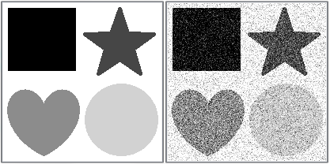
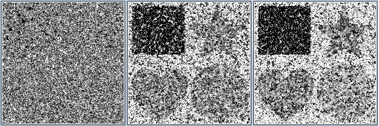
To quantitatively evaluate the image restoration, we consider the signal-to-noise ratio (SNR), which is expressed in decibels (dB) and is given by :
$$SNR = 10 \log \left(\dfrac{\sum_{s \in S} x_s^2}{\sum_{s \in S} (y_s-x_s)^2} \right)$$
where $x_s$ is the value of the $s$ pixel of the original noiseless image, and $y_s$ is the value of the $s$ pixel of the noiseless image. The greater the SNR, the less noise deteriorates the initial image. To know if the noise removal is effective, we will have to compare the values with the SNR obtained with the noisy image. The table below summarizes the SNR for a Gaussian noise of amplitude $50$.
| Amplitude | SNR (dB) |
|---|---|
| 10 | 63.9516 |
| 25 | 45.2884 |
| 50 | 31.9855 |
| 100 | 20.3203 |
Remember that we consider grayscale images, because the computing time is too long for color images ($E = [|0, 255|]^3$). Even for very simple grayscale images, the results obtained are far from perfect, which justifies limiting our study to this type of images.
There are several methods of Markov field image processing and each of these methods has its own parameters. To perform image processing, we must choose the values given to these parameters. The table below summarizes all the parameters with the default choices made, which are the choices that gave the best results when executing our algorithms.
The main differences in our results lie in the choice of the minimization algorithm and in the choice of the potential model.
We are going to apply to the scrambled image the different algorithms described above, for different parameter values. We will first study the Potts model, then the Markovian-Gaussian model.
First series of tests
At first, we consider that we know nothing about the image we need to obtain. We implement the algorithms described previously and execute them.
Potts Model
With simulated annealing
Given the size of the image, a scan of the noisy image shows that all shades of gray are present in the image: $E = [|0, 255|]$. We then run the simulated annealing with a Metropolis algorithm that pulls $\lambda \in E$.
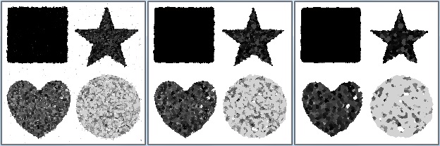
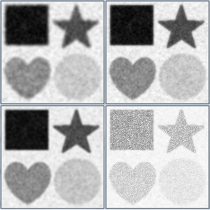
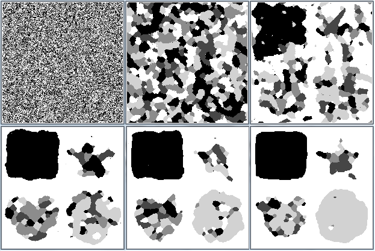
| $\beta$ | SNR (dB) |
|---|---|
| 50 | 2.73104 |
| 100 | 8.48355 |
| 500 | 11.3079 |
| 10000 | 11.6187 |
We see that the results improve when $\beta$ increases, with a saturation phenomenon for $\beta$ large ($\beta \approx 10^4$). However, the results are worse than the noisy image itself! The image being very noisy, the algorithm tends to replace the pixels by any value between $0$ and $255$, which does not allow to unclutter the image.
With ICM
Image processed by ICM and Potts model for 1, 2 and 4 iterations (from left to right).
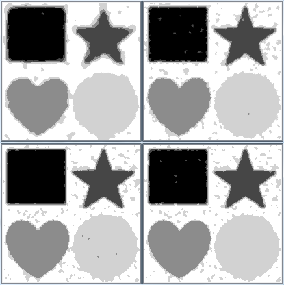
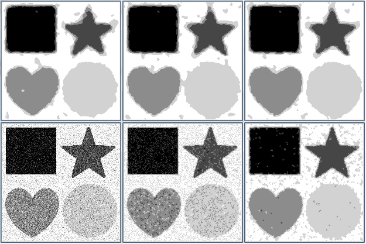
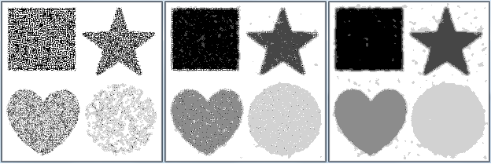
| Iterations | SNR (dB) |
|---|---|
| 1 | 29.2689 |
| 2 | 27.3294 |
| 4 | 25.5964 |
| 10 | 23.1687 |
The results are very good after a few iterations. Even after only one iteration, the noise has almost completely disappeared. However, the ICM tends to crop the figures, resulting in an SNR that decreases as the number of iterations increases. The SNR does not change when changing $\beta$, so $\beta$ does not seem to have any influence on the result.
Gaussian Markovian model
The Gaussian Markovian model is now being considered, and both energy minimization algorithms are being tested with and without attachment to the initial data.
We find that the Markovian Gaussian model blurs the images. Indeed, it tends to perform a kind of local average. Since the image is blurred by noise that takes on all values of $E = [|0, 255|]$, the averaging homogenizes the different grey areas into an average grey. Thus, even though the table below shows that the SNR is better than in the blurred image, the visual rendering and the disappearance of the noise in the white area are not good.
Image processed by simulated annealing (top) and ICM (bottom) and Markovian Gaussian model without (left) and with (right) data attachment.
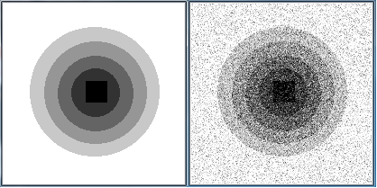
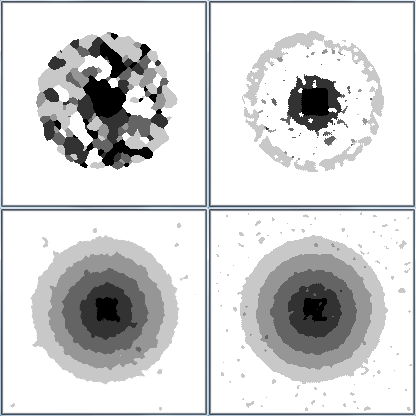
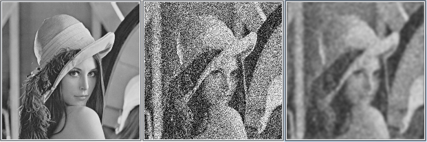
| Method | SNR (dB) |
|---|---|
| Annealing without attachment | 35.2715 |
| Annealing with attachment | 38.9796 |
| ICM without attachment | 38.0792 |
| ICM with attachment | 17.2107 |
This first series of tests shows that, except for the ICM with Potts model, the image restoration results are poor. For the simulated annealing with Potts, the poor results are explained by the random drawing on the $255$ shades of grey, whereas in the initial un-noiseed image, only $5$ shades are present.
Second series of tests
Configuration drawings are now made only among the shades present in the initial unclouded image: $\lambda \in E = \{0, 70, 140, 210, 255\}$.
Potts model
With simulated annealing
Image processed by simulated annealing and Potts model for $\beta \in \{5, 25, 35, 50, 100, 500\}$ (from left to right then top to bottom).
| $\beta$ | SNR (dB) |
|---|---|
| 5 | 3.38126 |
| 25 | 3.18447 |
| 35 | 14.8631 |
| 50 | 22.8984 |
| 100 | 23.9018 |
| 500 | 25.9764 |
The results are much better than when nothing is known about the initial image, even if the SNR remains lower than that of the noisy image. We can see here the importance of the $\beta$ parameter: the larger $\beta$ is, the larger the size of the homogeneous areas increases. However, there is always a saturation phenomenon for large $\beta$. The image converges towards a state close to the initial state.
With ICM
The results become excellent: the image obtained is almost the initial image and the SNR is better than for the noisy image. The SNR also shows that $\beta$ still has no influence.
Markovian Gaussian model
The Gaussian Markovian model also gives much better results. The results are slightly better for ICM than for simulated annealing. The image obtained when the attachment is added to the initial data, including the correction of the adverse effects of the ICM at the edges, is extremely close to the initial noise-free image.
Image processed by simulated annealing (top) and ICM (bottom) and Markovian Gaussian model without (left) and with (right) attached to the data and knowing the shades of grey present in the initial unblurred image.
| Method | SNR (dB) |
|---|---|
| Annealing without attachment | 40.3498 |
| Annealing with attachment | 44.4864 |
| ICM without attachment | 43.9946 |
| ICM with attachment | 44.7768 |
With simulated annealing
The influence of $\beta$ and the saturation phenomenon are preserved: the greater the $\beta$, the better the restoration. The SNR is better than for the noisy image.
Modifications of the $\alpha$ parameter have been performed on the tests with data attachment, however the results are already very good for $\alpha$ small, so $\alpha$ does not seem to have a big influence. It is recalled that in theory, the larger $\alpha$ is, the greater the attachment to the initial data.
Image processed by simulated annealing and Gaussian Markovian model without (top) and with (bottom) data attachment for $\beta \in \{1, 10, 25\}$ (left to right).
| $\beta$ | SNR (dB) |
|---|---|
| 1 | 40.7834 |
| 10 | 40.0753 |
| 25 | 40.0668 |
| 5000 | 39.6827 |
| $\beta$ | SNR (dB) |
|---|---|
| 1 | 32.5507 |
| 10 | 38.6730 |
| 25 | 43.5519 |
| 5000 | 43.4116 |
With ICM
We make the same observations as with the simulated annealing. The best SNR among all the tests is obtained here, for $\beta = 20$.
Image processed by ICM and Markovian Gaussian model with data attachment for $\beta \in \{1, 10, 25\}$ (from left to right).
| $\beta$ | SNR (dB) |
|---|---|
| 1 | 19.7154 |
| 10 | 39.8086 |
| 20 | 46.9805 |
| 25 | 46.474 |
| 1000 | 43.4296 |
| 5000 | 43.3621 |
Limitations of Markovian methods
The image processed in the first series of tests had separate shapes with distant shades of grey. We are now studying an image composed of a gray scale gradient to show the limitations of Markov methods.
Initial image without noise (left) and with Gaussian noise of amplitude 50 (right).
Simulated annealing methods and ICM with $\beta$ large, Gaussian Markovian model with data attachment and knowledge of the initial grades are applied to the image as these are the choices that have given the best results so far. The results are shown in below.
It can be seen that the simulated annealing with Potts' model gives a result similar to the one of the image with the different shapes for $\beta = 25$. When $\beta$ is increased, the result does not improve and remains close to that.
ICM with Potts tends to deteriorate the edges as seen in the first series of tests. However, as the shades of grey are close together, this causes some of them to disappear.
The Gaussian Markovian model gives very good results whatever the potential. The SNR obtained is double that of the noisy image, which is even better than the results for the image with the different shapes.
To conclude this study and to show the limits of Markovian methods on close shades, we tested the different algorithms on a photo with the $255$ shades of grey. The method giving the best SNR is the Markovian Gaussian model with data attachment, although this model results in blurring of the image.
Image processed by simulated annealing (left) and ICM (right) for the Potts model (top) and the Markovian-Gaussian model with data attachment (bottom) for $\beta$ large.
Initial noise-free image (left), with Gaussian noise of amplitude $50$ (middle) and image processed by Markovian Gaussian model with data attachment (right) for $\beta$ large.
Conclusion
Denoising an image is an important step in many advanced fields such as medicine or cartography. Our project presents a method for denoising black and white images based on Markov field theory and Ising and Potts physical models. The theoretical study of the Markov model highlights the need to choose the right minimization approach, as well as the sampling algorithm.
We were confronted with the problem of calibrating different parameters. The results show the efficiency of the ICM algorithm with the potentials from the Gaussian Markovian model, which, compared to other models, presents a better restitution of the deteriorated image. The better the information is known about the original image, the better the restoration.